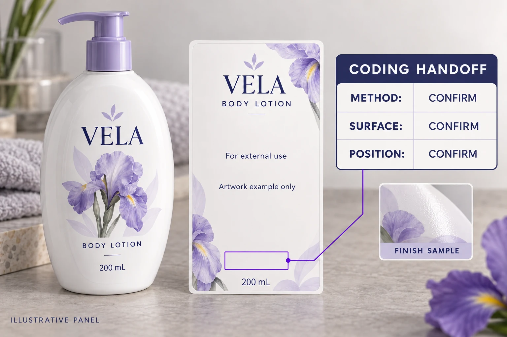

Start with the operation that will add the code
Ask who applies the variable information, at which site and at what point in the packing process. Is it printed on a flat label before application, or on a label already attached to the bottle? Could the agreed location instead be the closure, bottle or outer carton?
Those questions help the operator identify the relevant equipment and access conditions. They should not be answered by whichever person happens to be editing the artwork.
Videojet's cosmetics packaging overview describes different coding technologies and recommends considering contrast, resilience and product samples when selecting a solution. Its packaging-materials guidance also discusses coding on labels, containers and closures. These are equipment-vendor capabilities and selection considerations, not confirmation that any particular YT Labels construction accepts a chosen process.
The practical lesson is to identify the actual operation before reserving a supposedly printable patch. Do not replace an equipment specification with a generic instruction to “leave some white.”
Describe the exposed surface, not only its color
Send the label printer's proposed construction to the coding operator. Include the face stock, printed area and relevant varnish, laminate or other finish over the intended code position.
An unprinted white area can still have a surface treatment. A transparent part of the artwork may also carry a protective finish. Ask the printer to mark the proposed arrangement, then have the coding operator confirm which surface must be evaluated.
This is a compatibility question for the actual materials and process. It does not justify removing a protective layer everywhere or assuming one ribbon, ink or laser setup works on every film. If the proposed surface changes, ask whether the coding evaluation needs revisiting before the change is released.
For the wider construction decision, compare our cosmetic label material guide. Here the narrower task is defining the part of that construction on which a later operation will work.
Place the panel on the assembled package
Show the proposed code position on the real container or an accurate drawing. Include the applied-label orientation and any curve, seam, shoulder or base transition nearby. Ask the operator to mark the reachable area and its dimensional requirements with units.
The designer can then build the panel around confirmed inputs. Leave the code dimensions and surrounding clearance for agreement with the operator rather than copying a rectangle from another bottle.
For a front-and-back set, specify which label carries the panel. A note on a front artwork file is easy to lose when the back label is ordered separately. Link the location to the correct SKU, artwork ID and side of the package.
The bottle label size guide helps establish usable packaging space. A coding panel also needs access by the intended process; a good paper fit alone cannot establish that.
Make the handoff specific enough to review
Use one shared record rather than separate assurances that the printer and operator will “sort it out.” The table below is a purchasing aid, not a standard coding specification.
| Handoff field | Information to obtain | Owner to confirm |
|---|---|---|
| Variable content | Approved format, example length and required information | Brand's responsible reviewer |
| Coding operation | Site, equipment/process and stage before or after application | Coding operator |
| Actual surface | Stock, print coverage and finish at the proposed position | Label printer, reviewed by operator |
| Position | Named label, orientation, dimensions and package reference | Operator and artwork owner |
| Evaluation sample | Relevant material and pack; clearly identified construction | Printer and operator |
| Acceptance | Agreed checks, conditions, reviewer and unresolved items | Responsible production/brand team |
| Change control | Which material, process or position changes reopen the review | All affected parties |
Mark missing answers as pending. If the operator has not confirmed the surface or accessible position, the artwork can remain under discussion without being presented as production-ready.

Agree what a sample must demonstrate
Ask the operator to evaluate the proposed surface using the relevant setup and package arrangement. Identify the sample, construction and conditions. Record the agreed checks for the intended information and use case, including any outstanding questions about readability or handling.
If the process prints before application, clarify what later application and handling could change. If it prints on the assembled bottle, the sample needs to represent the access and position being approved. A loose piece of film and a filled curved bottle do not answer the same set of questions.
A screen proof can confirm the panel's layout and approved copy. It cannot demonstrate the behavior of a later coding operation. Our digital proofing guide covers that first review; keep the physical evaluation and its limitations separately identified.
This article does not prescribe mandatory batch wording, a code size or a legal location for the four target markets. The brand's responsible reviewers must establish applicable product and market requirements. Purchasing should pass those approved requirements into the technical brief.
Decide whether the label is the right location
Two hypothetical buyers may reasonably reach different conclusions. A project with a confirmed compatible construction and an accessible back-label panel can evaluate that route with its operator.
A second project may have little usable label area or a surface the chosen process has not established as suitable. It can compare another construction, another agreed code location or another coding arrangement with the relevant teams. Choosing the label is not a requirement to be defended at any cost.
Each alternative can affect artwork, sampling or the packing workflow. Compare the actual changes and quotation scope before assuming that the smallest visual alteration is the least expensive operational choice.
Send the printer a coding brief, not an empty rectangle
For a cosmetic bottle label inquiry, provide the container reference, label dimensions, proposed artwork, quantity per design and intended coding operation. Add the operator's surface and position requirements, the approved variable-content format and the agreed sample scope.
Use the inquiry form to prepare your message. Send the operator's drawing and artwork as attachments through email or WhatsApp; the form does not upload or send them automatically.
Before production release, the brand, printer and operator should be able to identify the same panel on the same construction. A white rectangle is a useful beginning. A confirmed handoff is what makes it actionable.